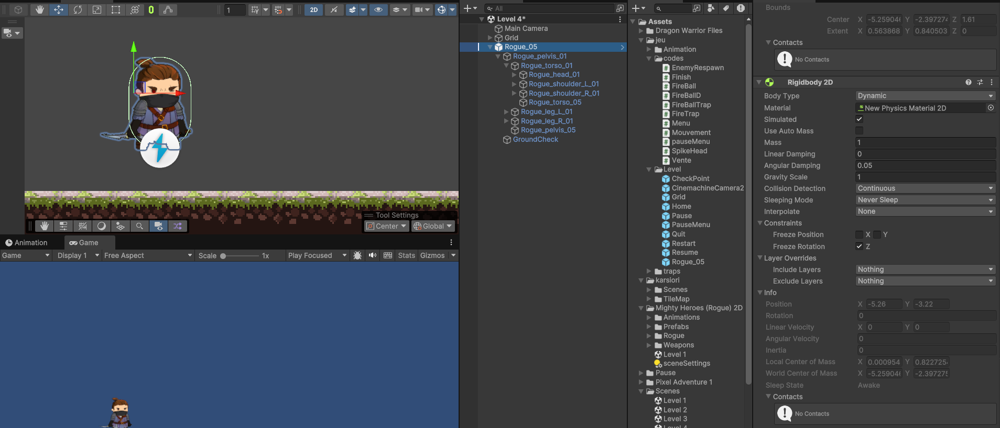
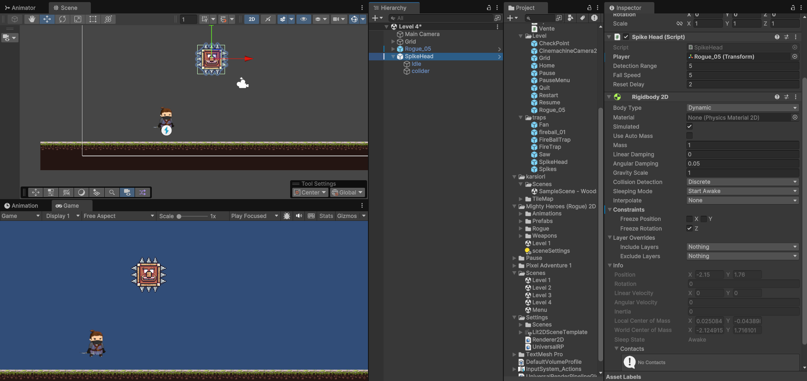

02. Création des Niveaux
Gestion du Scene Management : Création et organisation des assets pour l'architecture des niveaux.
Un jeu de plateforme en 2D inspiré de Mario. L’objectif est de traverser différents niveaux en évitant les obstacles et les ennemis.
Avant de coder, j'ai structuré la logique du jeu via un diagramme de cas d'utilisation. Cela m'a permis de définir les interactions principales : sauter, courir, et interagir avec les ennemis.

Gestion du Scene Management : Création et organisation des assets pour l'architecture des niveaux.

Ce script gère la physique du joueur en utilisant le nouveau système d'Input d'Unity.
J'ai choisi d'utiliser FixedUpdate pour garantir une physique fluide indépendante du taux de rafraîchissement (framerate).
rb.linearVelocity (remplaçant l'ancienne syntaxe velocity). [cite: 1]Raycast vertical permet d'autoriser le saut uniquement si le joueur touche le sol, évitant le "saut infini". [cite: 1]Mathf.Abs(horizontal). [cite: 1]
using UnityEngine;
using UnityEngine.InputSystem;
public class Mouvement : MonoBehaviour
{
public Rigidbody2D rb;
public float speed;
public float jumpForce;
public LayerMask groundLayer;
public Transform groundCheck;
float horizontal;
SpriteRenderer[] sr;
private bool isGrounded;
Animator animator;
private void Start()
{
// Récupère tous les SpriteRenderers de l'objet et des enfants
sr = GetComponentsInChildren<SpriteRenderer>();
animator = GetComponent<Animator>();
}
private void FixedUpdate()
{
// Utilisation de linearVelocity (Unity 6 / Nouveau système physique)
rb.linearVelocity = new Vector2(horizontal * speed, rb.linearVelocity.y);
animator.SetFloat("speed", Mathf.Abs(horizontal));
}
// Gestion du mouvement avec le nouveau Input System
public void Move(InputAction.CallbackContext context)
{
horizontal = context.ReadValue<Vector2>().x;
if (horizontal < 0)
{
transform.localScale = new Vector3(-0.2f, 0.2f, 0.2f); // Tourne le personnage
}
else if (horizontal > 0)
{
transform.localScale = new Vector3(.2f, .2f, .2f); // Face normale
}
}
public void Jump()
{
CheckGround();
// Vérifie si la touche saut est pressée et si le perso est au sol
if (Input.GetButtonDown("Jump") && isGrounded)
{
rb.linearVelocity = new Vector2(rb.linearVelocity.x, jumpForce);
}
}
void CheckGround()
{
// Raycast vers le bas pour détecter le sol
RaycastHit2D hit = Physics2D.Raycast(transform.position, Vector2.down, 1f, groundLayer);
isGrounded = hit.collider != null;
}
}
Ce script contrôle un ennemi statique qui tombe lorsqu'il détecte le joueur en dessous. C'est un exemple d'interaction entre IA simple et Physique Unity.
Vector2.Distance pour calculer la proximité du joueur sans collision physique.gravityScale (0 à 1) pour simuler une chute soudaine.isFalling) pour gérer les états du piège (Attente, Chute, Reset).
using UnityEngine;
public class SpikeHead : EnemyRespawn
{
public Transform player; // Référence au joueur
public float detectionRange = 5f; // Distance à laquelle il détecte le joueur
public float fallSpeed = 5f; // Vitesse de chute
public float resetDelay = 2f; // Temps avant de remonter
private Vector3 startPosition;
private Rigidbody2D rb;
private bool isFalling = false;
void Start()
{
startPosition = transform.position; // Sauvegarde la position de départ
rb = GetComponent();
rb.gravityScale = 0; // Désactive la gravité au départ
}
void Update()
{
if (!isFalling && player != null)
{
float distanceToPlayer = Vector2.Distance(transform.position, player.position);
if (distanceToPlayer < detectionRange && player.position.y < transform.position.y)
{
Fall(); // Déclenche la chute
}
}
}
void Fall()
{
isFalling = true;
rb.gravityScale = 1; // Active la gravité pour faire tomber l'objet
}
/*void OnCollisionEnter2D(Collision2D collision)
{
if (collision.gameObject.CompareTag("Player"))
{
// Appliquer les dégâts au joueur (ajuste selon ton système de santé)
collision.gameObject.GetComponent()?.TakeDamage(damage);
}
// Après collision, attend un moment puis remonte
Invoke("ResetPosition", resetDelay);
}*/
void ResetPosition()
{
rb.gravityScale = 0;
rb.linearVelocity = Vector2.zero; // Arrête le mouvement
transform.position = startPosition; // Remet à la position initiale
isFalling = false;
}
}
Ce projet Spiky Adventures a été une étape clé dans mon parcours. Il m'a permis de transformer des concepts théoriques en une application fonctionnelle. J'ai non seulement appris à coder en C# et à maîtriser l'interface d'Unity, mais j'ai surtout compris la logique globale d'un projet informatique : de la conception (UML) jusqu'à la gestion des bugs.